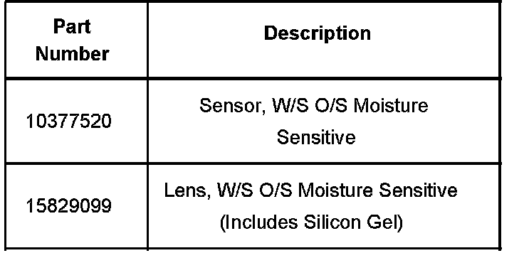
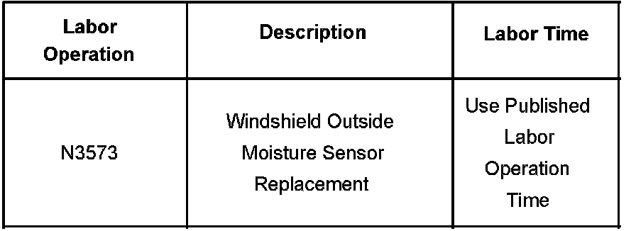

Wipers/Washers - Rainsense(R) Components Availability
Bulletin No.: 06-08-43-004BDate: December 05, 2007
INFORMATION
Subject:
Windshield Wiper Rainsense(TM) Sensor and Lens - Components Serviced Separately
Models:
2007-2008 Cadillac Escalade, Escalade ESV, Escalade EXT
2007-2008 Chevrolet Avalanche, Silverado, Suburban, Tahoe
2007-2008 GMC Sierra, Yukon, Yukon XL, Yukon Denali, Yukon Denali XL
with Wiper System Windshield, Pulse, Moisture Sensitive (Rainsense(TM)) (RPO CE1)
Supercede:
This bulletin is being revised to update the information regarding Windshield Replacement and add a procedure for replacing the complete sensor. Please discard Corporate Bulletin Number 06-08-43-004A (Section 08 - Body & Accessories).
The purpose of this bulletin is to advise the dealer service personnel that the Rainsense(TM) sensor and lens should be serviced separately. Follow the appropriate service procedure below when servicing the sensor or lens.
Moisture Sensing Feature Inoperative
Review the description and operation of the moisture sensitive wipers. Refer to Wiper/Washer System Description and Operation in SI. This is a new system for some of the vehicle applications. Some customers may not understand the DELAY positions on the wiper/washer switch, which are used to activate the AUTOMATIC rain sensing operating mode.
The DELAY positions are also used to adjust the level of sensitivity to moisture accumulation, which determines the dwell time for commanding a wiper motor wipe cycle.
If you do NOT find a fault in the system operation, please refer customers to Rainsense(TM) II Wipers in the Owner Manual for information for this system.
If you do confirm a fault in the system operation, inspect the uniformity of the silicon gel linking the sensor to the windshield.
If the silicon gel is distorted in any way or is not present at all, replace the lens only. Refer to Windshield Outside Moisture Sensor Lens Replacement in SI.
If the gel is intact, replace the complete sensor assembly by referring to windshield outside moisture sensor replacement listed below.
Windshield Outside Moisture Sensor-Replacement
If replacing the sensor assembly, P/N 10377520, use the following steps:
Gently pry the trim cover outward in order to remove the cover from the rain sensor module.
Disconnect the electrical connector.
Disengage the two metal retaining clips from the mounting bracket on the windshield.
Remove the entire sensor from the windshield including the gel.
Remove the old conductive gel residue from the windshield.
Clean the area of the windshield that contacts the windshield moisture sensor lens with a 50/50 mixture of isopropyl alcohol and water by volume on a dampened lint free cloth.
Remove the plastic protective covering from the lens of the new sensor.
Position and install the moisture sensor back onto the windshield bracket.
Engage the two metal retaining clips to the mounting bracket on the windshield.
Connect the electrical cover.
Secure the rain sensor module trim cover.
If it is necessary to replace the vehicle's windshield, a new moisture sensitive lens, P/N 15829099, will need to be ordered with the new windshield. Replace the lens from the old sensor with the new moisture sensitive lens. Then remove the plastic protective covering from the new lens and install the sensor to the new windshield. Refer to Windshield Outside Moisture Sensor Lens Replacement in SI.

Parts Information
Warranty Information

For vehicles repaired under warranty, use the table.

Disclaimer